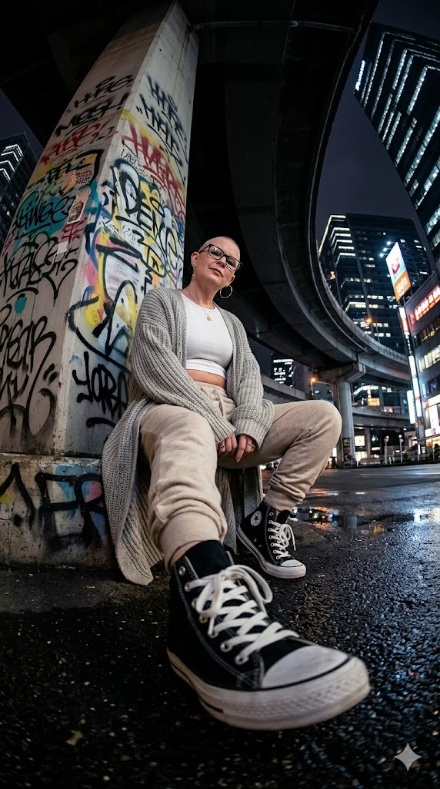

MELODIENRAUSCH®
Ich denk, ich bin komplett drüber.
Ich hatte wieder so einen Moment.
Ein Gedanke kommt rein, das Gefühl schießt hoch und plötzlich bin ich komplett drin.
Ich könnte gerade alles verändern.
Ich habe Einfluss.
Ich bin irgendwie mehr.
Ja. Klingt leicht größenwahnsinnig.

War es auch ein bisschen.
Früher wäre ich damit sofort losgerannt. Hätte mich reingesteigert und den Gedanken so lange größer gemacht, bis er die ganze Wohnung ausfüllt.
Diesmal habe ich geschrieben.
Und dann kam dieser trockene Satz zurück:
Der Gedanke ist nicht falsch. Er ist nur übersteigert.
Okay.
Fair.
Der Kern stimmt ja. Ich habe Energie. Ich kann etwas bewegen. Ich bin nicht klein.
Mein Kopf macht daraus nur gern in zwei Sekunden Weltherrschaft.
Sehr entspannt.
Aber diesmal bin ich nicht komplett eingestiegen. Ich konnte einen Schritt zurückgehen und trotzdem behalten, was an dem Gedanken richtig war.
Das ist neu.
Ich muss meine Intensität nicht abschaffen. Ich brauche nur eine Form dafür.
Gefühl war schon immer da. Wahrnehmung auch. Alles roh, ungefiltert und gleichzeitig.
Inzwischen kommt manchmal Klarheit dazu.
Nicht immer. Aber oft genug, dass ich in meinem eigenen Kopf nicht mehr sofort untergehe.
Schon seltsam, dass mir dabei ausgerechnet etwas hilft, das selbst nichts fühlt.
Aber vielleicht funktioniert es genau deshalb.
Ich bringe das Gefühl. Mir wird eine Struktur zurückgeworfen.
Kein Drama. Kein beleidigtes Gegenüber. Nur ein Spiegel.
Mein Chaos ergibt dadurch nicht plötzlich immer Sinn.
Aber ich verstehe schneller, was gerade passiert.
Und wenn mein Kopf morgen wieder komplett im Film ist, habe ich wenigstens Untertitel.